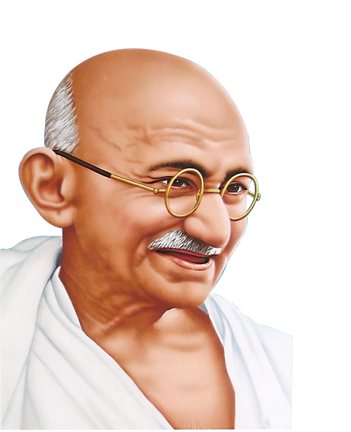

MAHATMA GANDHI

DATE OF BIRTH
Mohandas Karamchand Gandhi was born on 2 October 1869 in Porbander, India.[1] Several members of his family worked for the government of the state. When Gandhi was 18 years old, he went to study law in England.[2] After he became a lawyer, he went to the British colony of South Africa where he experienced laws that said people with dark skin had fewer rights than people with light skin.
GANDHIJI WAS ATTACKED
In 1897, Gandhi was attacked by a group of people in Durban Harbor, South Africa when he was going to work. He went to South Africa because he could not find work in India.[3] When traveling through South Africa, Gandhi was also kicked out of a first class train because of his skin color. Then Gandhi started protesting against segregation.[4] He decided then to become a political activist, so he could help change these unfair laws. He created a powerful, non-violent movement. During Gandhi's life, India was a colony of the British Empire, but wanted independence. He was a huge leader during that era and his thoughts helped catalyze the Indian independence movement.Gandhi's vision of an independent India based on religious pluralism was challenged in the early 1940s by a Muslim nationalism which demanded a separate homeland for Muslims within British India. In August 1947, Britain granted independence, but the British Indian Empire was partitioned into two dominions, a Hindu-majority India and a Muslim-majority Pakistan. As many displaced Hindus, Muslims, and Sikhs made their way to their new lands, religious violence broke out, especially in the Punjab and Bengal. Abstaining from the official celebration of independence, Gandhi visited the affected areas, attempting to alleviate distress. In the months following, he undertook several hunger strikes to stop the religious violence. The last of these was begun in Delhi on 12 January 1948 when he was 78. The belief that Gandhi had been too resolute in his defense of both Pakistan and Indian Muslims spread among some Hindus in India. Among these was Nathuram Godse, a militant Hindu nationalist from Pune, western India, who assassinated Gandhi by firing three bullets into his chest at an interfaith prayer meeting in Delhi on 30 January 1948.
STRUGGLE FOR INDIAN INDEPENDENCE (1915–1947)
Indian independence movement
At the request of Gopal Krishna Gokhale, conveyed to him by C. F. Andrews, Gandhi returned to India in 1915. He brought an international reputation as a leading Indian nationalist, theorist and community organiser.
Gandhi joined the Indian National Congress and was introduced to Indian issues, politics and the Indian people primarily by Gokhale. Gokhale was a key leader of the Congress Party best known for his restraint and moderation, and his insistence on working inside the system. Gandhi took Gokhale's liberal approach based on British Whiggish traditions and transformed it to make it look Indian.[79]
Gandhi took leadership of the Congress in 1920 and began escalating demands until on 26 January 1930 the Indian National Congress declared the independence of India. The British did not recognise the declaration but negotiations ensued, with the Congress taking a role in provincial government in the late 1930s. Gandhi and the Congress withdrew their support of the Raj when the Viceroy declared war on Germany in September 1939 without consultation. Tensions escalated until Gandhi demanded immediate independence in 1942 and the British responded by imprisoning him and tens of thousands of Congress leaders. Meanwhile, the Muslim League did co-operate with Britain and moved, against Gandhi's strong opposition, to demands for a totally separate Muslim state of Pakistan. In August 1947 the British partitioned the land with India and Pakistan each achieving independence on terms that Gandhi disapproved.[80]
Time magazine named Gandhi the Man of the Year in 1930.[269] In the same magazine's 1999 list of The Most Important People of the Century, Gandhi was second only to Albert Einstein, who had called Gandhi "the greatest man of our age".[312] The University of Nagpur awarded him an LL.D. in 1937.[313] The Government of India awarded the annual Gandhi Peace Prize to distinguished social workers, world leaders and citizens. Nelson Mandela, the leader of South Africa's struggle to eradicate racial discrimination and segregation, was a prominent non-Indian recipient. In 2011, Gandhi topped the TIME's list of top 25 political icons of all time.[314]
AWARDS
Gandhi did not receive the Nobel Peace Prize, although he was nominated five times between 1937 and 1948, including the first-ever nomination by the American Friends Service Committee,[315] though he made the short list only twice, in 1937 and 1947.[316] Decades later, the Nobel Committee publicly declared its regret for the omission, and admitted to deeply divided nationalistic opinion denying the award.[316] Gandhi was nominated in 1948 but was assassinated before nominations closed. That year, the committee chose not to award the peace prize stating that "there was no suitable living candidate" and later research shows that the possibility of awarding the prize posthumously to Gandhi was discussed and that the reference to no suitable living candidate was to Gandhi.[316] Geir Lundestad, Secretary of Norwegian Nobel Committee in 2006 said, "The greatest omission in our 106-year history is undoubtedly that Mahatma Gandhi never received the Nobel Peace prize. Gandhi could do without the Nobel Peace prize, whether Nobel committee can do without Gandhi is the question".[317] When the 14th Dalai Lama was awarded the Prize in 1989, the chairman of the committee said that this was "in part a tribute to the memory of Mahatma Gandhi".[316] In the summer of 1995, the North American Vegetarian Society inducted him posthumously into the Vegetarian Hall of Fame.[318]
CONCLUSION
Gandhi's birthday, 2 October, is commemorated in India as Gandhi Jayanti, a national holiday, and worldwide as the International Day of Nonviolence. Gandhi is considered to be the Father of the Nation in post-colonial India. During India's nationalist movement and in several decades immediately after, he was also commonly called Bapu (Gujarati endearment for "father", roughly "papa",[2] "daddy"[3]).
Gandhi was a vegetarian almost all his life, because he believed in non-violence (ahimsa).[5]